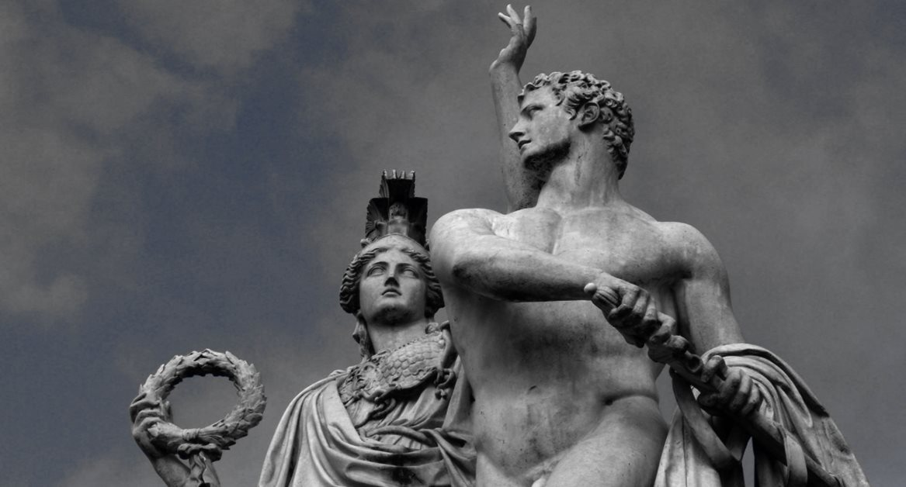

Merhaba, ben Asena Taşkıran. 08.05.1998 tarihinde Denizli'de doğdum.
Daha sonra 2011 yılında Bursaya geldim. Ve halen burada yaşıyorum.
Kitap okumak çizim yapmak ve oyun oynamak hosuma giden aktiviteler arasında yer alıyor.
.
Yunan Mitolojisi Hakkında.
